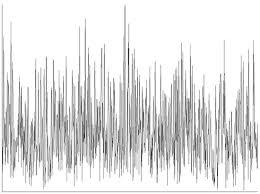

-
כדאי ללחוץ על התמונות בתחתית הדף
רעש הוא אחד הדברים הדומיננטיים ביותר שקיימים בסביבתנו, כאשר הוא קיים הוא מביא אנשים לחוסר ריכוז, עצבנות, ירידה ביכולות הלמידה ועוד לא מעט תהליכים שלילים, אבל, הקיום שלו הוא בלתי נמנע.
בכל פעם שאותו גל שתיארנו בדפים הקודמים לא עובד לפי הכללים ולא פועל במחזוריות קבועה התוצאה האקוסטית שתיווצר היא רעש, וזו למעשה היא גם ההגדרה האודיולוגית שלו.
למרות חוסר המחזוריות ניתן עדיין לדבר על תדר בהקשר של רעש ואלו הדוגמאות שמופיעות בסרטון, סוגי רעשים שונים שלכל אחד מהם יש תדרים שהם פעילים יותר בתוך כל הסיגנאלים שמהם מורכב הרעש.
רעש לבן שבו אין עדיפות ברורה לטווח אחד של תדרים, לא קיים אלא רק בתנאי מעבדה
רעש ורוד רעש שבו עיקר אפקט הרעש נוצר מתדרי הביניים והנמוכים
רעש חום רעש שבו עיקר האפקט נוצר מהתדרים הנמוכים
-
ולסיום: חידה
בתיאוריה קיים גם רעש כחול, שבו עיקר האפקט הוא בתדרים הגבוהים, אם תצליחו להבין למה מאוד קשה לקים סוג רעש כזה סימן שהבנתם המון על גלי קול
רמז : גלים בתדרים גבוהים הם קצרים יותר
